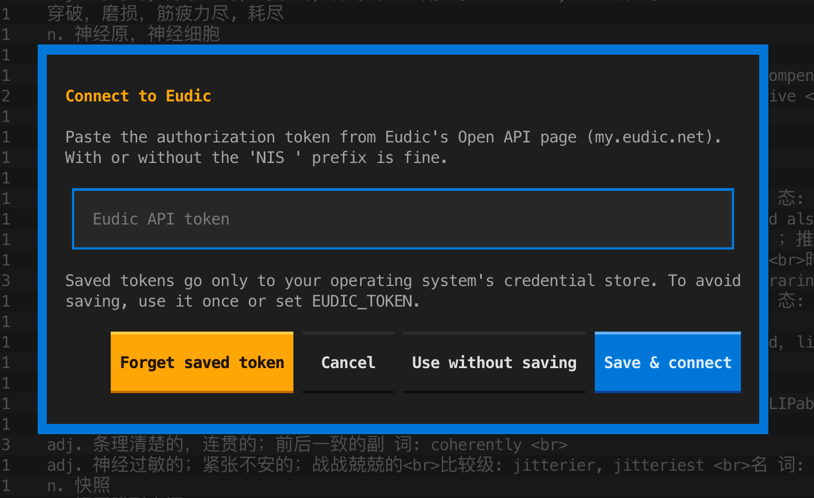
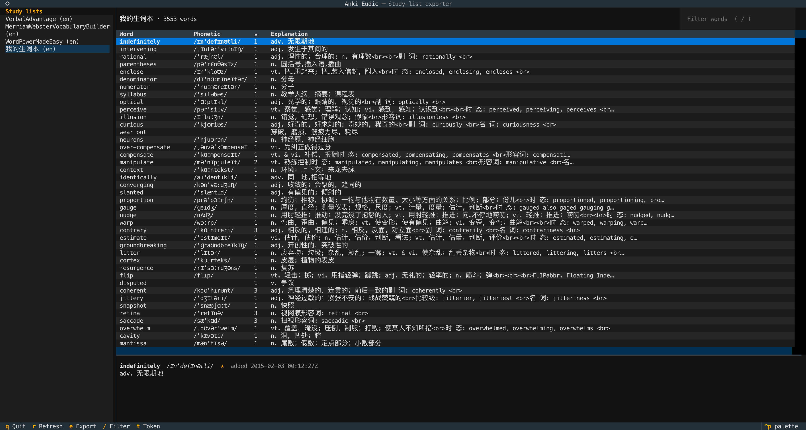
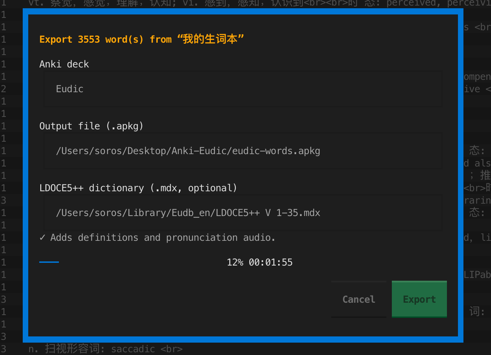

Your Eudic word list, ready to review in Anki.
Anki Eudic takes the unfamiliar words you saved in Eudic and turns them into an Anki deck, with Longman definitions, examples and British and American pronunciation.
uv tool install anki-eudic
Then run anki-eudic in your terminal.
Needs Python 3.10 or newer.
indefinitely
BrE/ɪnˈdefɪnətli/ AmE/ɪnˈdefənətli/
Click to show the answerA note as it appears in Anki. Flip it, then click a definition to reveal the Chinese.
From word list to deck
Everything happens in one keyboard-driven terminal window. There’s no Anki add-on to install, and Anki doesn’t need to be running.
-
Connect to Eudic
Paste the token from Eudic’s Open API page. It’s checked with Eudic first, then kept in your system keychain. It never goes into a file.

-
Pick a study list
Your lists are in the sidebar. Open one to see every word with its phonetic and Eudic explanation. Press / to filter.

-
Export and import
Press e, choose a deck name and file, and export. Then open the
.apkgin Anki with File → Import.
What you get
Cards built to help you remember the word, not just its translation.
- Longman content and audio
- With a local LDOCE5++ dictionary, each card gets numbered senses, examples, collocations, word origin, and British and American recordings.
- English first, Chinese on demand
- Definitions are shown in English. Click one to reveal the Chinese translation when you need it.
- Re-export without losing progress
- Export the same list again after adding words. Existing cards update in place and keep their review history; new words are added.
- Your context, kept
- The sentence you saved the word from, the date you added it and its star rating in Eudic all come along to the card.
- Works with any list size
- Every page of the list is downloaded and duplicates are removed, whether it holds twenty words or several thousand.
- Token stays private
- Stored only in macOS Keychain, Windows Credential Locker or Secret Service. You can also use it for one session without saving it.
Get started
Install from PyPI with uv or pipx, then launch it. You’ll be asked for your Eudic token the first time.
For Longman content, point the export dialog at your LDOCE5++ .mdx
file. On macOS it’s found automatically in Eudic’s dictionary folder.
# install uv tool install anki-eudic # or pipx install anki-eudic # run anki-eudic